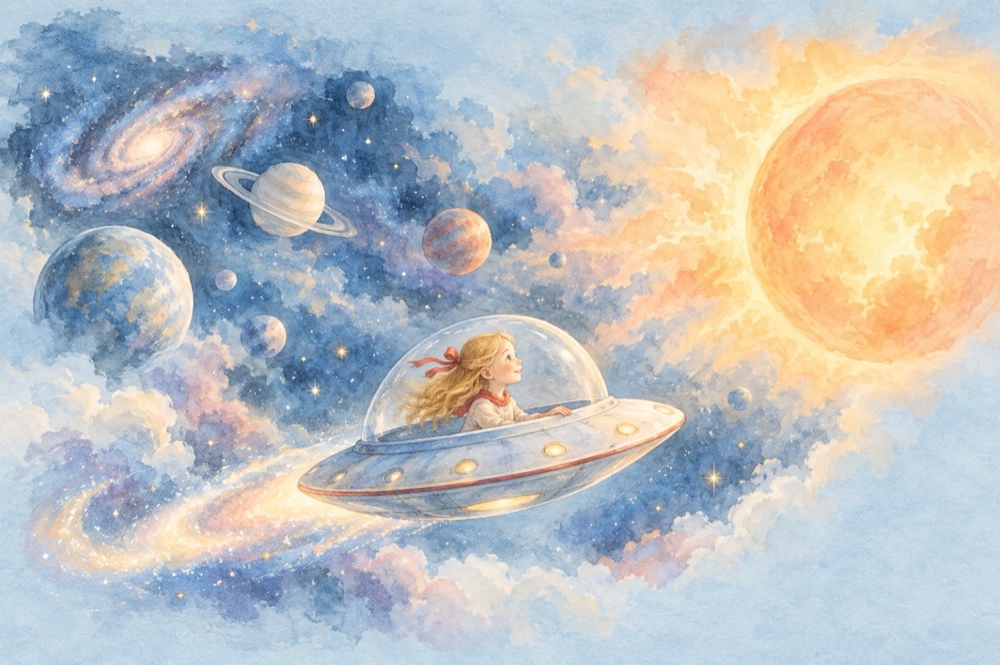

Visez
De mică copilă aveam un dor
Voiam să fiu o păpușă blondă
Păpușile niciodată nu mor
Rugam pe Dumnezeu de izbândă.
Scufița Roșie voiam să fiu
Să-i duc de mâncare bunicii
Pe lup nu doream nicicând să-l știu
Nici sentimentul groaznic al fricii.
O capră mândră cu trei iezi voiam
Să fiu eu vicleana și nu lupul
Să-l bag în casă unde-l ferecam
Ca să alin copiilor năduful.
Un urs să fiu mi-aș fi dorit
S-o pun pe vulpe cu coada-n baltă
Și coada să mi-o fi-nsușit
Din lacul unde i-a rămas în gheață.
De mică Tândală și Păcală
M-au păcălit clipă de clipă
Uitând că eu mă duc la școală
Și pot să-i păcălesc chiar de sunt mică.
Și boiernașii punguța s-o găsească
Iar eu să fac în boierime jaful
Prin asta, săracul să se gospodărească.
Dar ce nu aș fi vrut eu să mai fiu
Să am o farfurie zburătoare
Voiajând prin cosmos tainele-i să știu
De-aici și până dincolo de soare.
Om bun aș vrea să fiu…of…Doamne!
Să fiu copil, copii să-nveselesc
Să dăruiesc și artă și pace și bomboane
Deoarece pe toți copiii îi iubesc.
Iată toate sunt așa cum eu mi le-am visat
S-a arătat că am avut noroc
Acestea toate Dumnezeu le-a dat
Doresc acum copilăria, la ea să mă întorc.
Chiar și Scufița Roșie pot fi
Și Capra cu trei iezi, firește
De lup acum aș ști a mă feri
Chiar și pe vulpe eu aș păcăli.
Priviți că ruga mi-i îndeplinită
Pot să mă joc de-a hoții și vardiștii
La teatrul de copii sunt o actriță
Jucând în roluri iubite de copii!
Sunt păpușară și cu păpuși mă joc
Cu toate eu grăiesc în graiul lor
În inima mea cu toatele-și au loc
Deoarece păpușile nicicând nu mor!
Vasile Groza
Apare și în: Privește-mă în ochi (2018).